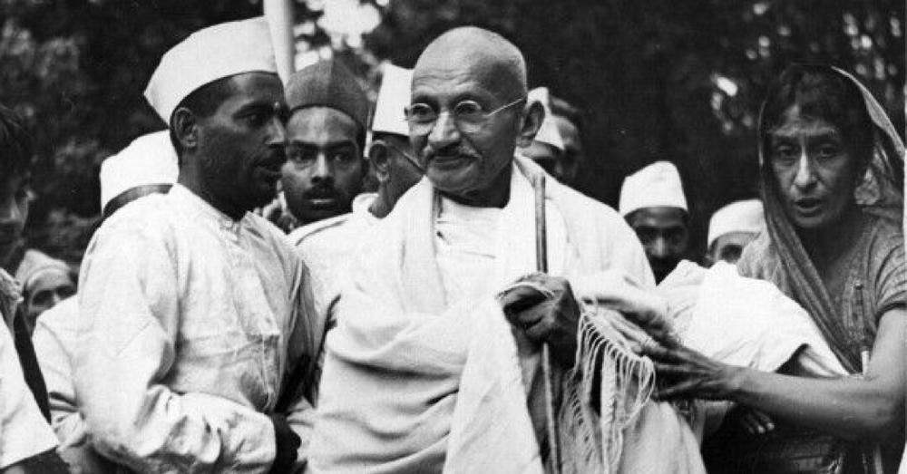

Mahatma Gandhi
The man who freed a billion lives

Gandhi addressed the masses from the Gowalia Tank Maidan in Bombay (now Mumbai) and exhorted them to participate in the Quit India Movement.
Here's a time line of Mahatma Gandhi
- 1869 - Birth at Porbandar.
- 1882 - Marriage with Kasturbai, aged 13.
- 1888 - Son, Harilal born.
- 1888 - Reached Southampton, England
- 1893 - Reached Durban, Natal.
- 1893 - Refused to remove his Paghadi; left the court.
- 1906 - Advent of Satyagraha at Empire Theatre, Johannesburg, where people took a pledge with God as their witness, to oppose the Black Act.
- 1906 - Left for England as a member of the Indian Delegation.
- 1909 - Wrote 'Hind Swarajya' aboard the ship 'Kildonan Castle'.
- 1912 - Gopalkrishna Gokhale's South Africa tour commenced.
- 1914 - Indians' Relief Bill (1914), passed.
- 1915 - Established 'Satyagraha Ashram', Kochrab.
- 1917 - Sabarmati Ashram established.
- 1919 - Massacre at Jallianwala Baug; three days' fast in Ahmedabad commenced.
- 1933 - Arrested at Ahmedabad and sent to Sabarmati Prison; shifted to Yeravda later.
- 1939 - Commenced fast at Rajkot against the breach of trust.
- 1939 - Wrote a letter to Adolf Hitler.
- 1942 - 'Quit India' resolution adopted; gave the call 'Do or Die'.
- 1947 - Bare Foot March to Noakhali commences.
- 1948 - Commenced fast at Delhi.
- 1948 - Took three bullets on his chest. Godse the assassin.
- 1948 - Cremated on the banks of the Yamuna by Ramdas.
"An eye for eye only ends up making the whole world blind."